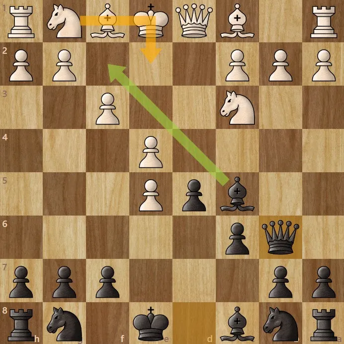

Caro-Kann Defence
♟️ Solid Structure
🛡️ Safe Defense
⚔️ Deadly Counterplay

The Caro-Kann Defence begins with:
1. e4 c6
2. d4 d5
Black immediately challenges White's center while building one of the
safest pawn structures in chess.
This opening is known for strong defense, smart positioning, and
powerful counterattacks later in the game.
Many grandmasters choose the Caro-Kann because it is reliable,
difficult to punish, and leads to strong endgames.